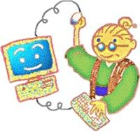
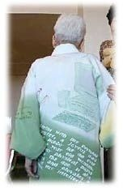
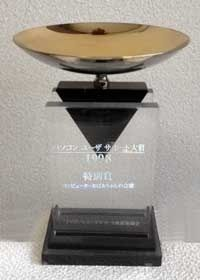
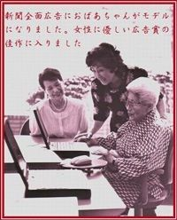
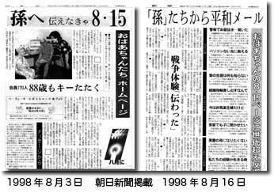
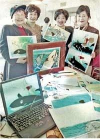
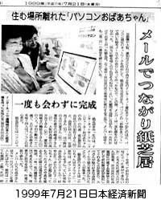

| アッと爺婆ドッと混む | |
| 大川加世子 | |
| conputer abachan no kai (2014) | |
アッと 爺婆 ドッと 混む（第一巻）
コンピューターおばあちゃんの会
今から四十年位前でしょうか、ＮＨＫの「みんなのうた」の中に「コンピューターおばあちゃん」という可愛いアニメがありました。明治生まれ、漫画の「いじわる婆さん」のような白髪 頭をきりっと後ろにひっつめて最先端のコンピューターを叩きまくるという、着物姿の可愛いおばあちゃんがいたのを覚えていらっしゃいますか。そのギャップの楽しさ、絶対にコンピューターおばあちゃんを実現させたいと心に決めました。
世はまさに超高齢化社会に突入、手を取り合って横に繋がっていなかったら、これから私たちどうなるの？ コンピューターおばあちゃんの会を作らねば！
パソコンという最適なツールがあるじゃない、こんな素敵なおばあちゃんが目の前にいるじゃない。
その頃は世の中、誰もがパソコンは仕事の為の道具としか思っていませんでした、でも私はパソコンのもう一つの大切な役割を見つけたと気がつきました。高齢者が孤立しないで元気に生きて行く為の命の手綱です。
ふと気がつけば、パソコンを使って仕事をしていた若い女性たちが出産で退社はしたが、赤ちゃん連れでは外出が思うように出来ない、それで同じ悩みを持った母親同士パソコン通信というものを使ってお喋りをしておりました。
そうだ高齢者もこれに限る、小学校一年生から戦争に巻き込まれ、物不足の日々を生きる知恵で乗り切って子供を育てて来たじゃないの、終戦後アメリカが国際保険会社（ＡＩＵ）を大手町にビルを建て活動を開始した時すぐに参加、英文タイプも、やっと開発された日本語ワードプロセッサーもパソコンも。子育て退社をしたあとも、四十数年同じ配列のキーボードとつきあって来たじゃないの、今こそこれから突入する高齢化社会にこれを活かそう、自信を持って手を繋ごう、と世田谷の小さな一軒家のキッチンで一人のおばあちゃんがそう決めたけど、でもそれだけ、な〜〜んにも無い・・、パソコンが有る訳じゃない、場所が有る訳じゃない、先生が居る訳じゃない、勿論お金も全くない、どうしよう・・・
さぁて、どこから手をつけたらいいの？ 先ず、どこかでパソコンを貸してくれる所は無いかしら、東京二十三区の区役所、都庁、メーカー、販売店、いくら歩いても
「何言ってんのあなた、おばあちゃんがパソコンするわけないでしょ。ミスマッチ、ペイしません、」
今から18 年前はこれが現実だったのです。第一、区役所でもまだパソコン使用は少数派だったのです。今これを信じられる人は少ないでしょうね。たまに
「貸してあげてもいいですが、壊れたら直して置いて下さいよ」
当たり前の事なのですが初めてパソコンに触るおばあちゃん達、何を消してしまうかわからない。壊すことも有るだろう、その度に修理代を出していてはとてもやってはいけない。
来る日も来る日も足を棒にして一日中歩き回るが、年金暮らしの身には交通費も頭が痛いしお先は真っ暗、一番先に努力をする人と二番目に努力をする人の違いは、二番手は努力をすれば出来るのだという例を見て努力する。一番先に努力する人はどんなに頑張っても、あとかたも無く泡と消えてしまうかもしれなくても努力する
お金がだんだん無くなってきて、夜道を遅くなっての帰宅は情けなく心細く足はパンパンに張り。泣きたくなりましたよ。
近くに世田谷区のボランティアセンターという看板が目に入って、ふらっとドアを開けると二人の若者が座っています。
「私こんな会を作りたいのだけど、出来るかしら」
若者の一人に聞いてみました、
「大川さんノートパソコン一台持っているのでしょう？、僕も一台持っているよ。二台もあるじゃあないですか出来ますよ」
初めて闇夜に微かな光が差したみたい、
「僕、漫画描くの好きだからおばあちゃんのシンボルマーク描いてあげるよ」

さらさらと傍の広告紙の裏側におばあちゃんの漫画の絵を描いた。もう一人の茶髪の大学生が
「僕、名刺作ってあげるよ」
この二人の若者の善意がコンピューターおばあちゃんの会の原点となりました、が・・・
発会してみたら何とかなるかな、一人でも来てくれたらいい、何といういい加減さ、だってそれしか無いでしょ！誰も相手にしてくれないのですから。区役所で毎月二回配布される区報の中の「みんなの広場」ここなら無料で二行位は掲載してくれる。頼みこんで
「皆さま、ちょっと高い玩具だけど、パソコンで一緒に遊びませんか」
と載せてもらい区役所の一番小さな会議室(四十人部屋、そんな大きな部屋要らないよ。でもこれが一番小さな部屋だそうで)をこれも無料で借りて、とにかく発会の準備をしていると近くのパソコン販売店の若者が
「せっかく発会式をするのだからノートパソコン十五台貸してあげるよ」
「へぇ でも区役所に置いておく事できないのだから・・」
「解った、終わったらすぐに引き揚げてあげますよ」
世の中、神も仏もいたのです。渡る世間は鬼ばかりではありませんでした。
忘れもしません、平成９年３月27 日。朝から雨がザンザン降っています、こんな雨の中一人も来なかったらどうしよう。心細さも頂点に、ところが発会の午後一時に近づくとどうでしょう、傘をさし杖をつき後から後から百五十人もの爺ちゃん婆ちゃんが集まってくるではありませんか。きゃー！ どうしよう。四十人部屋で急遽二部制にしたって八十人しか入れない、残りの八十人の方には最敬礼で帰って頂くしかありませんでした。
そうよ、世の中の方が爺婆ちゃんよりも遅れていたのです。
「出来っこない出来っこない」って！
こんなにパソコン好きなのに
「発会式くらいは手伝ってあげるよ」
と友人が何人か集まってきておばあちゃん達とインターネットで楽しく遊んでくれました。初めてノートパソコンを見る爺婆ちゃん達もいて蓋がなかなか開けられない、やっと開いたら
「へーこれがパソコン！」
パンパンと柏手を打って、そしてパタンと閉めてしまう。だめよ閉めたら仏壇じゃ無いのだから・・・
何とも大騒ぎ、でもその嬉しそうな顔を今も忘れられません
「パソコンって覚えたら何だか楽しそうね」
「私インターネット出来たのよ」
コンピューターおばあちゃんの歌を歌いながら
「これって私たちのテーマソングね。」
帰りのエレベーターの中の賑やかな事！皆十歳位は若返えったみたい。それを読売新聞、日本経済新聞、時事通信はたくさんの地方紙に記事と写真で知らせてくれました。おばあちゃんたちはその気になり、日経新聞は月が替わると再び「この人」欄に大きく取り上げてくれましたが、さてそれからが大変でした、何も無いまま始まってしまったのですから。パソコン貸して、場所貸して、の私の行脚 が始まりました。爺婆ちゃん達はしびれを切らし
「何時になったら始まるのよぉ」
一番苦しかった時でした。私は郵政省のテレワークディ行事に参加して、さまざまな仕事をしている方と「しりとり」のように遊びで繋がり一生懸命にこの環境になれるよう試みました。それを応援して下さるように民放テレビがニュースで取り上げてくれました。でも片足は高 下駄 をもう片足は草履 を履いて歩くみたいな、何とも不安定な生き方で日々過ごす事になりました。
私は自分で自分を応援するつもりで特許庁の階段を登ってゆきました。ずらっと並んだ個別相談室の中はとても親切で易しい言葉使いで素人達の相談にのってくれていました。
安心してコンピューターおばあちゃんの会の名前の登録、おばあちゃんの顔のロゴの登録、 jijibaba の大小の文字列の登録と相談員のアドバイスで近似の幾つかの登録を済ませました。 jijibaba.com (爺婆どっと混む)はジャパンタイムスの記者が取材の時、
「一度聞いたら忘れませんよ」
と笑っていましたが我ながら面白いアドレスと満足でした。料金を支払い、これを十年毎に続けてゆく覚悟を固めた時、大きな後ろ盾を頂いたような安心感が私の身体をすっぽりと包んでいきました。
そして東日本と西日本の二つに分かれたばかりのＮＴＴ東日本社の研修センターから
「研修生が授業を受けている間だけ、自習室を使ってよろしい、機械の故障も全部見てあげましょう」

というご好意を頂き、やっとパソコンに触れる事が出来るようになったのは発会してから六カ月も過ぎて秋になっておりました。
七十代、八十代、九十代この高齢者たちに何をどう説明し覚えて頂くか、今まで誰もやった事のない会を始めるのに・・、マニュアルがある訳じゃないし、聞く人も勿論いません、途方にくれて私は発会式に傘をさし杖をつき、
「パソコン覚えたいのです」
と来て下さった八十代のおばあちゃんに聞いてみました。
「あなたはパソコンで何をなさりたいのですか？」
「私はもう足が弱って旅行は出来ませんが若い時に行った所をもう一度訪ねてみたいのです、北海道にも行きました、厳島神社もスイスにも行ったのよ」
そうだ、誰でもやりたい事から入って行こう、それしかない。このおばあちゃんの言葉がヒントになりました。一人一人が全く違うことからスタートです。
「わたし、生まれた村に三十年も帰っていません、あの村、今どうなっているのかしら？」
「世界中の美術館を廻ってみたい」
「孫と話をしてみたい」
「囲碁のお相手をしてほしい」
「私の株、今日どの位上がったかしら」
まあ、見事に皆バラバラなことをやっています。そうです、これには一人一人にサポーターが必要なのです。本当に世の中で初めての事をするのです。先ずボランティアを募集しました。
「おばあちゃんたちはお喋りをしながらゆっくりとパソコンを覚えてゆきたいのです」
大学生達がビックリするくらい集まってくれました。それも理系ではなく文系が多い、つまりおばあちゃんとお喋りをしたいのです。続いて若いサラリーマン、定年後の中高年たち、夏休みには中学生の男の子（パソコンが驚く程上手でした）爺婆ちゃまたちには曾孫 の年齢です。さぞかし親や先生には反抗もするのでしょうが間が幾つも抜けた爺婆と曾孫は何と相性のいいこと。それに車いすの身障者まで（パソコン技術の素晴らしい身障者がいらっしゃる！）異世代交流、異業種交流がこんなに楽しいものとは！
定年後の男性の現役時代の話に、男子大学生は興味 津津 、もうとっくに二人の手はお留守、話す方も聞く方もパソコンは後回しで夢中になって話をしています、それで両方が大満足。
「でも学生さん、他に行けばアルバイト代貰えるのでしょう？ いいの？こんなバールフレンドばかりで・・」
「心配しないで、物凄く色んな物を貰っていますよ」
朝起きて、寒いからやめた！、眠いからやめた！と言われても何の繋がりも義理もないのにこの方法で何年も何年も続きました。中学生は帰る時一番にこにこしています
「誰かに喜んで貰う事って楽しいんだなぁ」
という感覚かも、後からその中学生の先生から
「結果がとてもいいんですよ」
とメールを頂いたこともありました。
時々若いサラリーマンが来て爺婆ちゃまたちと楽しそうに話しているが
「今頃、課長 俺のこと探しているだろうなぁ」
「えぇっ？ ちょっと、困るわよ 会社抜け出して来たの？ スミマセン課長さん
技術者たちが気分転換に立ち寄るのでしょうか。でも私たちにもその最先端技術の仕事っぷりがとても新鮮で刺激的でした。ロボット開発技術者の話などは驚くことばかりです。
時には東南アジアの国々の大学の先生たちが調査研究という名目で見学されて行きました、
「何年か先には、我が国にも必ず日本に続いて高齢化社会が来るのです。その対策を今から考えて置かなくては」
それぞれの国で先を見据えて動き始めておりました。」
見渡せばあらゆる世代が集まって来ています。これではおばあちゃん達が技術の耳年増 （聞きかじりの知識が豊富な女性）になるわけですよね。
何をやっても不思議と新聞社やテレビ局に取材されます。私は追い詰められて事を起しただけなのですが・・・そんなに珍しいことなのでしょうか。その大学生達が十七年過ぎた今も訪ねて下さったり年賀状が届いたり・・「手が足りなかったら何時でも声をかけて下さいね」と。お金が総ての世の中とも言われるのに、日本の若者たち凄いですよ。素晴らしいです！
もう一つ驚いた事は、大学生達の卒論に「高齢者とパソコン」関連を書きだした人が多い事、男子学生も女子学生も競ってこのテーマを取り上げていました。これって先見の明？、まだまだ珍しいテーマでしたのに。世の中より一足先に学生が何かを感じておりました。更に就職活動、集団面接には必ず一人か二人は
「コンピューターおばあちゃんの会のボランティアをしていました」
という学生とぶつかり、
「この話をすると面接官はこっちを向いて話を聞いてくれるの。あいつ、僕が話そうと思っていたのに、先を越された」
とか口惜しがっていたり、不思議な世の中になってきたものと思いました。大企業のシンクタンクといわれる研究機関は、全て研究材料にと取材に来ました。何なのいったい、そんなに珍しい事を私始めちゃったのかなぁ・・・高齢化社会の真ん真ん中の年齢に私が入り込んで、先が不安でいっぱいだっただけなのに。
その頃パソコンの値段は六十万円ほどしました、今聞くとびっくりするでしょう。爺婆ちゃまたちが何とか最初は無料でパソコンを練習できるように出来ないものかと考えました。現在は中古のパソコンはいくらでもあります。でもその頃、信じられないくらい無いのです。
中古パソコンはどうなっているのか調べてみますと、大会社のリースのパソコン、いっせいに古くなると粉砕会社に持ち込み、粉にしてご丁寧にその写真を添えて新しいものを買うか借りるかするのだそうです。
「これがどこでも正しい方法です」
と言われます。
「何とかしてまだ使えるパソコンをおばあちゃん達に回して下さい」
と色んな会社にハンコを幾つも押して（今これを言うと誰もが笑います、ハンコってそんなに可笑しいのですか？）頼み回りました。やっと
「二十台持って行ってもよろしい」
と許可が出て機械好きな大学生を連れて粉砕会社の巨大倉庫に出かけました。
「わぁ 俺、これ欲しい、この部分欲しい！」
まるで玩具箱に入ったように大学生達の目が輝いています、
「ちょっとぉ おばあちゃんのパソコンも選んでよ」
やっと二十台の中古パソコンを車に積み、九十歳代のおばあちゃんから順番に家に運び込み接続設定となるのですが、ちょっと待って、ＯＳだけはパソコンを貰おうが拾おうが買わなくてはなりません。せっかくここまで無料で来たのに・・
近くの調布市にマイクロソフト社の研究所がありました。またまたボランティア技術者と一緒に正面から
「おばあちゃんたち、パソコンでとても元気に生きております、ＯＳ下さい」
よくもぬけぬけと・・
自分に下さいなんてとても言えませんのに・・・、すると即時
「いいですよ、二十個どうぞ」
こうゆう時のアメリカの対応の素晴らしさにびっくり。後はおばあちゃん達の家で設定すればこれで 準備完了 出発進行！！
大勢の方々のご協力のお蔭で一歩踏み出す事が出来たのです。どれもパソコン初期の頃のことで、今では考えられないお話です。それでも爺婆ちゃんたちは大喜びでパソコンと遊び始めました。
先ず・・絵を描こうです。そうです、幼稚園でも（失礼）先ずはお絵かきから始めますでしょう。その一人、七十七歳の楚々とした女性がご自分の顔を描いています。美しいその眼元に涙の滴 、でもそれがとても大きいのです、顔の半分を覆っているようです。不思議な絵を描く方だと思っておりました。途中で終了時間が来て、当時はこれを小さなフロッピーに保存しこちらで預かり、また次回に続きを描きます。
何回目かに
「次は何日にいらっしゃいますか？」
とお尋ねしますと首を指さしながら
「私、明日手術をします、ここに悪いものが出来て居りまして・・、子供たちも海外から帰国しております。パソコンがあったから、私は今日まで楽しく絵を描いて過ごせました」
私は本当にびっくりしてしまいました、だって彼女が一番嬉しそうに、はしゃいで絵を描いていたからです。大きな涙の謎・・は解けました。そして・・・その絵は・・完成することはありませんでした。
パソコンがどんなに高齢者達の生活を潤し元気の源となったことか・・・。
さて、無料パソコンで遊びだしたおばあちゃん達のその後は最初の不 安気 な様子も、あれよあれよと言う間に慣れて三か月もすると
「つまんない、このパソコン音楽聞けないじゃないの」
「そりゃそうよ。会社のパソコンに音楽ソフトなんて入って居ないわよ」
「解った、私自分で買うわ」
そしてパソコンは勿論、プリンター、スキャナー等など全部を買い揃えて、明日頭の血管が切れても可笑しくない方々が(失礼)
「いいの 私が死んだら曾 孫 に使ってもらう、（孫は働き盛りで皆持っている）先ず私が充分楽しんでから・・」
おばあちゃんは変わったのです。私はこれでいいのだと喜びました。
発会の秋パソコンの画面をふと見ると、
「高知県知事 橋本大二郎
大川さん、高知県は本州で一番高齢者の多い県です。コンピューターおばあちゃんの会のお話をしに高知までお出かけ下さいませんか」
びっくり、何これ、パソコンってこんな悪戯 も入って来るんだ気をつけなくては。おお恐い！
一週間位忘れていたら、
「高知県庁○○課長です、何日の飛行機のキップはいかがでしょうか？」
えぇっ、本当の事だったの？？ またまたもっとびっくり！
そして無我夢中の中で五、六百人の、いいえもっと多かったかしら、お客様の前で否も応もなしに舞台に載せられる事態になりました。昔、小学一年生の学芸会の劇で「舌切雀」をさせられた夜、熱を出してしまった私にもう一人の私が後ろで話しかける、
「これが出来ないのなら会を続けるのをやめたら？」
いや！いやよ。やっと発会に漕ぎつけたのにやめたくない。うつむき加減でぼそぼそと、でも必死で爺婆ちゃんとの泣き笑いの日々を、高知の爺婆ちゃまたちに語りかけた。橋本知事は一番前の席で最後までじーっと聞いていらして、終わると舞台に駈けあがり、両手をしっかり握って
「大川さん、よかったですよ！」
と何回も労ってくださいました。その日、読売新聞、日経新聞、東京新聞に博報堂が撮影した当会のおばあちゃんと私が一緒にパソコンを打っている写真がＮＥＣの全面広告で載りました。後でＮＥＣの広報部の方が見せて下さったのですが、片手では持ちきれない程の問い合わせの葉書の束（十七年前は未だメールでなく葉書でした）、不思議そうな顔で
「おばあちゃんってこんなにパソコン好きだったの？」
「そうよ、あんなにパソコン貸してってお願いしたでしょ・・」
結局、私たちのモデル料はお婆ちゃん達の老眼用の大きな文字の易しいパソコン用テキストを作って貰う為に使われる事なりました。
アイコン＝絵マーク、スクロールバー＝三角マーク、メーリングリスト=お喋り広場、その他サーバーからパソコンに移したりする時はお引越し、パソコンのリカバリーは大掃除などなど生活用語をパソコンにからめたり、当会の中でしか通用しないような井戸端会議ならぬパソ端会議用の言葉が、続々パソコン用語として使われ始めました。おばあちゃんは新語作りの名人なのです。
パソコンのメーカーが音声入力に力を入れて下さるようになりました。「おばあちゃん、これを読んでみてください」とＩＢＭ社の技術者が日本経済新聞を持って訪ねて下さいました、おばあちゃん達は言われた通り日経新聞をすらすらと読みあげました、パソコンも同じくすらすらと画面に間違えなく表示します、「凄いねぇ 声で言えばパソコンが書き出してくれる、これなら楽でいいわねぇ」 喜んだ爺婆ちゃまたち、「次はどうぞお好きな言葉３どうぞ」技術者に促されておばあちゃん、「昨日は辛子 明 太子 どうも有り難う」カタン、コトン、カタカタコトコト、可愛いというか、可哀そうというか、パソコンが悩んでいます。おばあちゃんすかさず「何よ、やっぱり会社の為の研究じゃぁないの」技術者の何とも困った顔、パソコンは辛子明太子を知りませんよ。無茶は言わないの！ 一九九八年、始まったばかりの高齢者とパソコン時代の笑い話、朝夕高齢者の為に研究開発に精をだされる技術者の皆様、お許しくださいね。これを時事通信社が取材していました。でもすぐに関西弁の音声入力も出て、技術の進歩はスピードを上げていました。
平成11 年、お堅い郵政白書（まだ郵政省がありました）におばあちゃんの漫画のロゴと一緒に
「高齢者のパソコンクラブの草分けで『おばあちゃんの会』というのが十回同じ質問をしても怒らないサポーターたちが協力して出来ました」

と一ページに渡り掲載されました。十回同じ質問しても云々は冗談でサポーターにお願したのですが、大真面目で漫画のおばあちゃんと一緒に白書に載り、可笑しいやら困惑するやら。多分ここでお偉い先生たちは一斉にずっこけたことでしょう。その頃、
「パソコンユーザサポート大賞一九九八特別賞」
という表彰状をＰＣコンシューマサポート連絡協議会から頂戴しましたが日々無我夢中で、特別賞に値するのかどうかも不安の種でしかありませんでした。
また、その頃今は亡き元東京都知事青島幸男氏と「高齢者問題を語る」という話合いの席に呼ばれました。
コの字になった会場で私の席が丁度青島知事の真正面でした。否応なしに目が合います。それで白い長い紙をデスクの前に垂らしました、「コンピューターおばあちゃんが意地悪婆さんに会いに来ました」
「意地悪婆さん」とは誰でも知っている青島氏がテレビドラマで演じた人気漫画のヒロインです。にやっと笑った顔が楽しかった！
やっと会が動きだし歳が明けるとすぐに、全国ネットＮＨＫラジオ深夜便で一時間程、私の当会発会への思いなどをお話する機会を頂き間もなく、丁度元日にドスンと年賀状の束が郵便受けに落ちるように全国から葉書を頂き驚きました。会員も順調に増えて、全国津々浦々どの半島どの島迄も絆が広がって行きました。
イギリスＢＢＣ放送、アメリカのニューヨークタイムスも取材に来て下さり驚く事にはマイクを突き付けられると英語でペラペラと答えているおばあちゃんも居る事、そうですよね。八十年以上の長い人生、外国生活経験者の方もいらっしゃっても不思議ではありませんよね。同じく天保生れの九州｜大分 藩 の家老のお姫様だったおばあちゃんに育てられたという会員、高齢の凛とした女性がいらっしゃいました。その家老のお姫様だったおばあちゃんは日本で初めて電熱器を使った方だそうで、「電気で沸かしたお茶は炭や薪 で沸かしたお茶より美味しいわね」とおっしゃったとか、もし彼女が今生きていらしたらコンピューターおばあちゃんになっていましたよね、きっと。九十歳前後の方たちは候文 （書簡に多く用いられた文語体の文章の一種）でメールを書き、その返事はまた他の高齢者が候文で返信していました、こんなやりとりは当会だけの貴重な記録でしょうね。それもこれもテレビや新聞、色々なマスコミが爺婆ちゃん頑張ってと育てて下さったのだとしみじみ感謝です。
メール交流の為のメーリングリスト「お喋り広場」もネットが密 になり、外国で歳をとられた日本人もぽちぽち参加されはじめ、懐かしい祖国のお祭り、郷土料理などに心を癒されて、楽しさ苦しさ、寂しさも共有して強力なライフラインとなってゆきました。
二月頃、北海道の北端から
「流氷が着岸しましたぁ」と写真を添えたメールが入ると同じ日に、沖縄からは
「もう春です！」
と満開の桜の写真が届ききます。日本って細長いですね。宮古島の会員が
「私、東京よりもマニラの方が近いみたい」ですって。
でも楽しい話題だけしか出せないようなメーリングリストにはしたくありません。高齢者はどなたも何かしら重い荷物を抱えていらっしゃいます。孤立しないで賑やかなお喋りの中にいることが何より大事です。
九州の九十四歳の男性、
「私が家内の介護をしております、下の世話も最初は気持ちが悪くゴム手袋をしておりましたが今はもう何とも感じません。」
などとメールがはいりますと読む方も、介護した経験も、された経験も半分以上はあります。一斉に
「私の時にはこう考えた、僕の時は」
と言葉をかけております。一人ではないという心のゆとりが出来て緊張も辛さも和みます。会話は高齢者にとりましては生きる栄養素であり酸素です。楽しく生きることが何よりの予防医学です。波乱万丈の世を生き抜いた人生の達人たちは、他人の痛みのわかる心優しい人々です。
テレビニュースなどの取材を受けたりしているうちに文部省生涯学習局「女性の社会参加支援特別推進事業」の委員を委嘱されました。カナダ・トロントで開かれた「インターナショナル スウィッチ シンポジウム」でホールの四方のスクリーンに私の顔が大写しになって当会が紹介されたとか。
秋には世田谷区役所と共催事業で「コンピューターおばあちゃん祭り」を、また日経新聞主催の
「女性の為のネットワーキングフェア９７」に参加。外務省海外広報課日本紹介映画「never too old」は五ケ国語で当会を紹介しました。

新聞の全面広告に載ったおばあちゃん達の写真は「女性に優しい広告賞」の佳作に入賞。あちこちに引っ張り回され、取材され、何が何だか解らないうちに、何の力も付かないうちに、私はもみくちゃにされていきました。七時のニュースに出て、九時のニュースに出て、私の頭はこんがらがってきました。
初心に戻らなくては、とにかく頭を冷やさなくては、いったい世の中どうなっているの？。助けて！
地に足を着け以前から考えていた「私たちだから出来る事」をして生きて行かねば。そうです。戦争の記憶を孫に伝え残しておこう、戦争など二度としないように・・それが出来るのは戦争の悲惨さの中で逃げまわりながら育ち、恐ろしい経験をした私たちでなければ書けないのです。
「記憶のままに・・私の八月十五日」
平成10 年初夏に爺婆ちゃま達に記憶を辿ってもらうことにしました。会員の中には
「昭和二十年八月十五日終戦は鹿児島の特攻基地で迎えました」
という男性会員やら、
「特攻隊員を基地に運んでいた」
というパイロットの男性もいらして、改めて戦争の恐ろしさに身体が震えてきました。こんな事を書いている私も中学二年、学校に行けば、そのまま先生に引率されて軍需工場に連れて行かれ、一日中ジュラルミン製の航空機のエンジン覆い作りにハンマーを振り上げていました。中学二年生の女の子が折り紙の飛行機ではなく実戦のあの戦闘機、途中で空中分解もしないで飛んだのだろうか。
終戦で大連から中学生で一家を連れ引き揚げてきた男性会員が、丸善の重役を退職されたばかりとかで大いに力を貸して下さり、さすが専門家、皆様の記憶の原稿をきちんとまとめ、私が「孫に伝えにゃ戦争体験」としてホームページにアップしました
今まで活字で記録を書いた方はあるけどインターネットで残すのは始めての事で、これも世間の特に若い方の注意を引いたようです。言葉の少なくなる頃の中高生、大学生たち大勢がＡ４サイズの紙にぎっしりと
「知らなかった、こんな事が有ったのですか」
と感想メールの山。若いお母さんたちは
「絶対に子供たちに伝えます」と・・これもインターネットの効果でしょう。
在外の日本人からもたくさんのメールが届き、ロスの日本人学校の先生からは
「原爆の解釈の違う米国で、どのように平和教育をしたらいいか難しい、ぜひ教材にさせて下さい」
というメールも来て、その後生徒さんからはたどたどしい日本字で
「こんな恐ろしいこと考えられないです」
とか書いた感想文の束が送られてきました。あの子たちも今は大人になって、世の中の中堅として活躍していることでしょう。

日本の小学校としては学芸大学附属世田谷小学校六年生社会科の授業に当会のホームページ「私の八月十五日」を使用、その授業風景を撮影、副教材ビデオとして制作開始と聞きました。
この反響メールは四百通にもなり、新聞は朝日、読売、毎日、アサヒイブニングニュースなどなど写真を添えて大きく掲載して下さり、外務省広報課から「海外こどもウィークリーニュース」や海外子供向けニュース八月号「孫に伝えにゃ・・私の八月十五日」発信。ＮＨＫ手話こどもニュースで各地の聾学校とネットで繋ぎました。
思いもよらない程の反響に皆びっくりし、そして私たちでもまだ世の中の役に立つ事があるのだ。これからも高齢者だからこそ出来るというものを皆で作って行きましょうと話し合いました。
一年後、平成11 年８月、再びこの「私の八月十五日」を忘れまいと、写真と記事を世田谷区発行の区報の表紙に大きく載せて頂き感激いたしました。
平成11 年、筑摩書房から「おばあちゃんのパソコン指南」と言う本を出しませんかとのお話を頂き、昼間の仕事を終えた夜中に一人で原稿と取り組み、夜なべで何とかこの会を始めるまでの事を書き終えました、この時初期からボランティアとして参加して下さっていた日本で最初の介護ロボット、「豆腐もつかめるロボット」を開発された青年技術者石井氏が技術協力として参加して下さいました。しかし世間の皆様の本は書評欄に載るのですが、私のは家庭欄、やっぱり本とは認められないで鍋釜扱いなのだと落ち込みました。
前世紀もそろそろ終わる頃、絵の好きな会員で紙芝居を作ろうと言う話が出て、東京、千葉、関西、ハワイなど数人と童話を作る会員がそれぞれの役を決めて、でも近い人だけが会うのは不公平だから誰も出来上がるまでは会わないことを取り決めました。みんなで絵を描いてネットで繋ぎメールに添付してまとめ役に送ります。手を描く人、足を描く人、まとめ役が
「私の家はばらばら殺人事件の現場みたいよ」
とぼやいていました。出来上がった紙芝居を取材の日本経済新聞の記者の方が紙面に
「おばあちゃん達が二十一世紀の仕事ぶりを先取りしました。来世紀は一か所に集まる事なく仕事ができるようになるでしょうから」と。
その通り、現在は家に居ても何処に居ても仕事は一緒にできますよね。 前世紀の最後の私たちへのご褒美のように思え嬉しかったものでした。

紙芝居を見せる木材の枠はおじいちゃんの日曜大工、そして私が生まれて初めてそれにペンキを塗りました。
次の全国オフ会では物置きで見つけたと拍子 木 を持って来た会員が紙芝居のおじさんよろしくそれをトントンと打ち鳴らし紙芝居の始まりを知らせ、ある会員は浅草橋に出かけて駄菓子の飴を買って来て会場を売り歩き、会員たちはテーブルの上に十円玉を置いて飴売りから飴を買い、それぞれの役者は野球帽等かぶり、役になりきり紙芝居を演じました。

おばあちゃん達はそれぞれに思いっきり楽しんだ事は言うまでも有りません。終了後、自作の紙芝居を世田谷区役所幼児室に一冊寄贈しました。
二十一世紀がすぐそばまで見えて来た平成11 年、１９９９年夏の頃の事でした。
発 行：コンピューターおばあちゃんの会
執 筆：大川 加世子
イラスト：明珍 秀子
入力制作：鳥海 直躬
写真加工：鳥海 直躬
２０１３年６月２３ 日公開
２０１４年３月６日修正発行